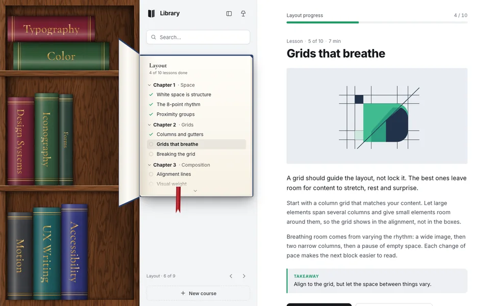
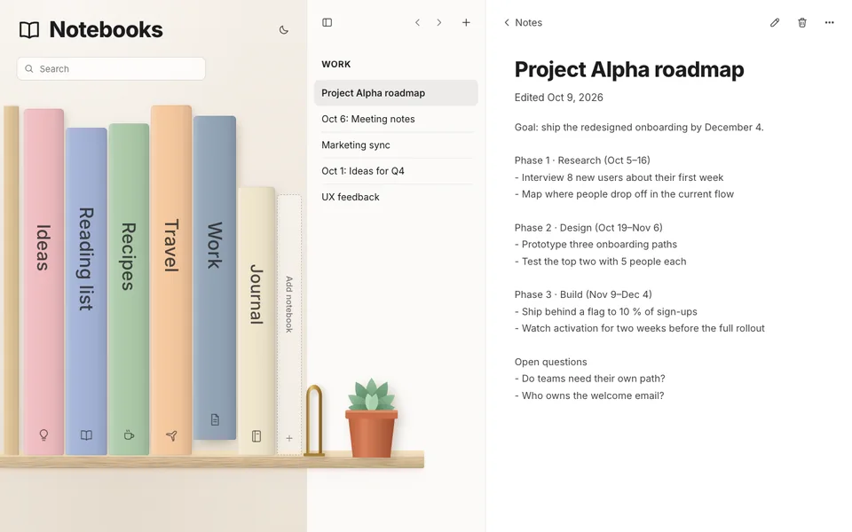

SHELF — bookshelf navigation
A sidebar that is a bookshelf. Pick a book and it comes off the shelf; its chapters or notes become the navigation. Search dims the shelf, new books slide in, and you can drag them into a new order.

Library
An online course site. Walnut bookcase, cloth spines, gold foil. The active book flies out and opens in the sidebar; lessons tick off as you finish them.

Nordic
A calm notes app. Light-oak floating shelf, matte pastel notebooks. The active notebook slides out; its notes are editable and saved as you type.